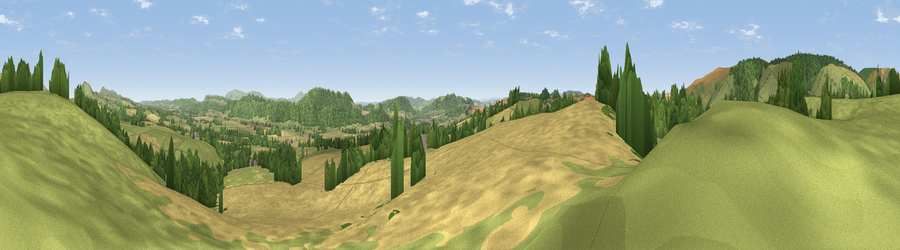

Viewpoint near Wistanstow
#13833 in England · top 41% of its area beats it · near WistanstowThe view, rendered

A 360° render of this exact spot computed from the terrain model, tree cover and land cover — summer colours, afternoon light, calibrated against photographs of famous viewpoints. Real trees, hedges and buildings will differ in detail.
The panorama
Grey silhouette: terrain skyline in each direction (720 bearings, Earth curvature and refraction included). Dashed green: skyline with trees (+15 m) and buildings (+8 m) as obstacles. Blue strip: how far the ground is visible on each bearing.
Where the view opens
Wedge length = distance to the farthest visible ground on that bearing (vegetation-aware). Rings at 10, 25 and 50 km.
What fills the view
43% grassland · 32% cropland · 25% woodland ·
Angular shares of the visible panorama (visual magnitude), not map area. Landscape diversity 0.48 (0–1 Shannon).
Key numbers
More beautiful places nearby
The staircase of upgrades: each row has a higher view potential than everything closer. Driving times are estimates from straight-line distance, calibrated against real road routing — check an actual route before setting out.
| Place | Direction | Drive | Score |
|---|---|---|---|
| Viewpoint near Asterton | NW · 2 km | ~6 min | 69.0 |
| Viewpoint near Asterton | WNW · 3 km | ~8 min | 79.6 |
| Viewpoint near Asterton | WNW · 3 km | ~8 min | 83.0 |
| The Lawley | NE · 12 km | ~22 min | 85.8 |
| Viewpoint near Little Wenlock | NE · 28 km | ~45 min | 86.6 |
| North Hill | SE · 54 km | ~75 min | 86.8 |
| Worcestershire Beacon | SE · 55 km | ~76 min | 87.1 |
| Viewpoint near Bossington | SSW · 148 km | ~171 min | 88.3 |
52.48530, -2.84854 · source: screening · position refined by local search. Computed location — check access rights before visiting.